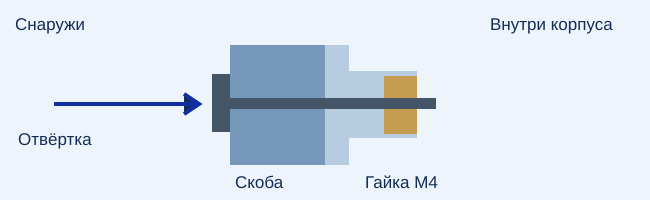

КОНКУРСНАЯ ВЕРСИЯ · ПРОТОТИП
Сигнал для судьи
Четыре светодиода загораются на 2,5 секунды. Пищалка подаёт два сигнала. При подключении ноутбука событие можно вывести крупно на экран, развёрнутый к судье.
Что взять из наборов
Оставьте от V1: Arduino Uno R3, акселерометр Амперки AMP-B041, шпиндель струбцины и четыре печатных болта крышки. Корпус, крышка и скоба струбцины нужны из комплекта V2.
- 4 ярких красных светодиода Ø5 мм с широким углом свечения и 4 резистора по 330 Ом. Рассеянная линза помогает видеть свет сбоку.
- Активная пищалка с двумя выводами, на 5 В, до 30 мА. Выберите наиболее слышимую с места судьи; смотрите громкость в паспорте вместе с расстоянием измерения. При постоянных 5 В активная пищалка звучит непрерывно. Пассивный пьезоэлемент V1 сюда напрямую не подходит.
- NPN-транзистор BC337 или 2N2222, резисторы 1 кОм и 10 кОм, диод 1N4148 или 1N4007, провода, небольшая монтажная плата и USB-кабель для Uno.
- 4 винта M4×25 с головкой Ø не более 9,5 мм, без шайб; 4 обычные гайки M4 под ключ 7 мм. Для гаек — немного клея.
Питание конкурсной версии — через USB от ноутбука или проверенного пауэрбанка. При сборке V2 батарейку, её клипсу и выключатель цепи VIN можно не ставить. При работе от пауэрбанка заранее проверьте, что он не отключается в ожидании.
Струбцина крепится снаружи

- Распечатайте по одной детали 01–04 и четыре болта 06. Детали 04 и 06 можно использовать от V1. Деталь 05 от старой версии не нужна. STL уже ориентированы для печати.
- До установки плат вложите четыре гайки в шестигранные гнёзда изнутри. Для центровки наживите винт через скобу снаружи; нанесите каплю клея только на грань гайки. Дайте клею затвердеть. Подведите инструмент к каждой головке и проверьте затяжку до монтажа на стол.
- Уложите Uno и датчик в их рамки, разъём USB — к вырезу, штыри датчика — вверх. Закрепите несколькими небольшими точками клея по краям; люфт датчика ухудшает повторяемость.
- Вставьте четыре светодиода изнутри в ряд отверстий Ø5 мм до упора буртиком. Уберите люфт каплей клея. На крышке сверху закрепите пищалку выходом звука наружу, у отверстия для проводов рядом с крайним светодиодом. Не закрывайте звуковое отверстие. Проверьте на своей пищалке, что она не перекрывает светодиод.
- Закрепите собранную плату ключа на изолирующем основании в свободном батарейном отсеке; не оставляйте открытые выводы касаться друг друга. Оставьте проводам крышки небольшой запас. Проверьте сигналы, затем закройте крышку четырьмя печатными болтами.
Подключение при отключённом USB
| Узел | Соединение |
|---|---|
| AMP-B041 | V → 5V, G → GND, D (SDA) → A4, C (SCL) → A5. Это распиновка модуля Амперки. |
| Четыре светодиода | D3, D4, D5 и D6 → каждый через свой 330 Ом → анод своего светодиода. Все катоды → GND. |
| Ключ пищалки | D9 → 1 кОм → база NPN. База → 10 кОм → GND. Эмиттер → GND. Коллектор → минус пищалки; плюс пищалки → 5V. Уточните выводы транзистора по маркировке. |
| Защитный диод | Параллельно пищалке: конец с полоской → 5V, другой → коллектор. Старый делитель для пассивного пьезо не используется. |
Один светодиод потребляет около 9 мА при падении 2 В. Не подключайте пищалку или всю группу светодиодов непосредственно к одному выводу Uno.
Сначала фон, затем касание
- Распакуйте прошивку, откройте TableMotionContest.ino в Arduino IDE, выберите Arduino Uno и загрузите. Закрепите коробку на рабочем столе, направьте свет к судье. Оставьте кабель свободным, чтобы за него не тянули.
- Откройте монитор порта на 115200 бод. После запуска около пяти секунд не касайтесь стола. Дождитесь READY. Команда t проверяет свет и звук; b временно отключает или включает звук.
- Нижняя граница автоматического порога — 0,010 g вместо 0,025 g в V1. Порог равен большему из 0,010 g и четырёх измеренных уровней шума, до пользовательской поправки. Команда − (обычный минус на клавиатуре) понижает порог на 0,002 g; + повышает. Поправка сохраняется. p показывает порог, r заново измеряет фон.
- На конкурсном месте понаблюдайте две минуты без касаний при обычном движении людей. Затем сделайте 10 слабых касаний в разных точках. Цель проверки: 0 ложных тревог за эти две минуты и не менее 9 обнаруженных касаний из 10. Если фон запускает сигнал — повышайте порог; если пропускаются касания — понижайте. Повторите оба теста. Сильный удар соседнего участника датчик не отличит от движения этого же стола.
- Попросите судью встать на своё место при обычном шуме и освещении. Проверьте свет, звук и отсутствие повторной тревоги от самой пищалки на одном касании. Если звук теряется, включите крупное табло. После срабатывания первые 1,15 с датчик не регистрирует новое событие.
Табло на ноутбуке
Откройте эту страницу в настольном Chrome или Edge по HTTPS, подключите Uno по USB и закройте монитор порта Arduino IDE. Выберите порт и дождитесь готовности. Табло читает события прямо с устройства; интернет для передачи показаний не нужен.